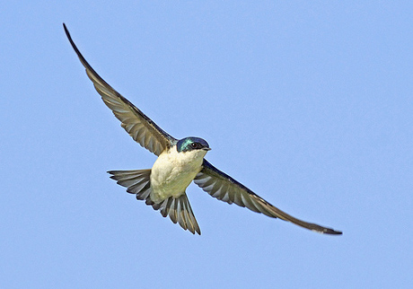

My superpower is having the ability to fly, meaning instead of walking, you can float around the sky like a bird. You can glide through the sky like wind, relax in the sky, fly around and enjoy life, and be meters away from the ground where everyone is. Flying is a really interesting ability, being able to travel in air. There are limitless things you can do in sky compared to on the ground. I can fly as long as I want as I wish. Having this superpower is really useful, and fun to use.
I obtained this super power by eating bird food. Worms, insects, little seeds, etc. After eating those foods daily for 3 months, and maintaining a healthy diet. I started feeling like I was receiving some bird characteristics of an aerial animal. Power was surging throughout my body at one point, and after that, I could mentally bring out my wings whenever I feel like it, replacing my arms, and fly for an unlimited amount of time. Physically, I still look normal with my arms, but mentally I have wings, and am able to fly.
With this superpower, I'm going to fly everywhere, and use this ability mainly as a travel tool. I would visit all my relatives around the world, such as China, fly home, fly to school, travel the world, enjoy the views, fly around with aerial animals, watch others from above, feel the breeze, sightsee, and do many other fun things with this unique ability. Flying is a privilege, and I'd be using it wisely and enjoy my long and productive use of it. I wouldn't take my superpower as granted.
 This is where the image can be found.